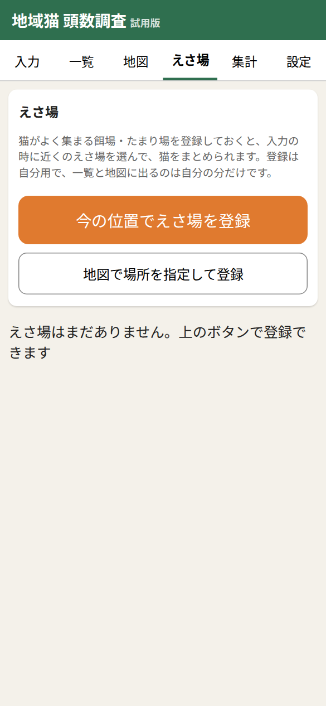
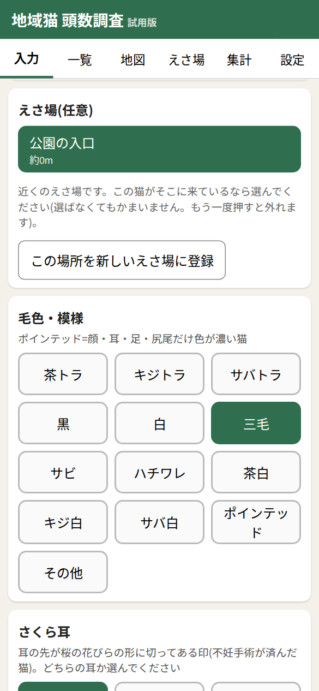

読む人ごとに分けてあります。自分に当てはまる所をご覧ください。「入力する人」の項は、全員が読む所です。「全体を見る人」「管理者」の項は、その役割の人だけが使います。
はじめに
このアプリは、地域猫の頭数調査のために、研究会の人が自分のスマホで猫の記録をつけるためのものです。見つけた猫の毛色・さくら耳・様子と、見つけた場所を記録します。
記録はどこに行くか
- 記録は、まずスマホの中に保存されます。電波があれば、研究会の受け付け(表計算のシート)に自動で送られます。
- 見られるのは、基本的に自分が記録した分だけです。「全体を見る」役割の人だけが、全員の分も見られます。
- 写真は、撮影場所の情報を消してから保存されます。
ことばの説明(ここで一度だけ)
- ログイン: 「この人です」とアプリに知らせて、使えるようにすること。
- QR(キューアール): 白黒の四角い模様です。スマホのカメラで読むと、アプリが開きます。
- NFC(エヌエフシー): カードをスマホの裏側にかざすだけで読み取れる仕組みです。
ログイン入力する人
ログインのしかたは2通りです。研究会から案内された方で行ってください。
Google のアカウントがある人
アプリを開くと、いちばん上に「Google でログイン」があります。そのボタンを押します。

研究会に登録した Google アカウントを選びます。登録していないアカウントだと「登録されていません」と出ます。研究会の担当者に連絡してください。
補足: ログインしなくても、スマホに保存はできます。送るのは、ログインしてからです。
ログインカードをもらった人
Google のアカウントが無い人には、ログインカード(紙の QR か、NFC のタグ)と、4けたの暗証番号が渡されます。暗証番号は、口頭や電話で伝えられます。
NFC のカードは、スマホの裏側にかざします(iPhone は上の端)。紙のカードは、スマホのカメラで QR を読みます。
アプリが開いて、暗証番号を聞かれます。4けたの数字を入れて「ログイン」を押します。

「入力した人」に自分の呼び名(カード)が出ればログイン完了です。

- 暗証番号を入れるのは、そのスマホで最初の1回だけです。次からは、アプリを開くだけでログインしたままです。90日使わないと、もう一度カードと番号が要ります。
- 暗証番号を5回続けて間違えると、そのカードは止まります。止まったら、研究会の担当者に連絡してください(戻してもらえます)。番号を忘れた時も同じです。
- カードをなくした時も、担当者に連絡してください。前のカードはすぐ使えなくなり、新しいカードが渡されます。記録は同じ人としてつながります。
- カードは、他の人に渡さないでください。
猫を記録する入力する人
見つけた猫の前で、「入力」の画面を開きます。上から順に入れていきます。
位置: 開くと、いまの場所が自動で入ります(「位置: GPSで取得」と出ます)。違う時は「位置を取り直す」、猫が別の場所にいた時は「地図で場所を指定」を押して、地図をタップします。位置の許可を聞かれたら「許可」を選びます。

毛色・模様: 当てはまるものを1つ押します。選ぶと緑になります。

さくら耳: 耳の先が桜の花びらの形に切ってある猫は、不妊手術が済んだ印です。右耳か左耳かを選びます。ない時は「なし」、見えない時は「確認できず」です。

続けて、世話されているか・餌をあげている人・年齢・性別・体の様子・尻尾・人への慣れ、を選びます。迷う時は「不明」を選んで大丈夫です。
飼い猫の可能性(任意)
飼い主がいそうな猫かどうかを、「あり」「なし」「わからない」から選べます(入れなくてもかまいません)。「あり」を押すと、理由を選ぶ欄が出ます。いくつでも選べます。
例: 「首輪がある」を選んだところ。「その他」を選ぶと、短い文字(30字まで)で書く欄が出ます。もう一度押すと選びなおせます。

写真・目立つ特徴(任意)
「カメラで撮る」か「写真を選ぶ」で、写真を3枚まで付けられます。目立つ特徴(例: 右前足だけ白い)も書けます。

保存する
- いちばん下の「この猫を保存する」を押します。
- 電波があれば、保存のあと自動で送られます。
- 電波が無い時も、スマホの中に保存されます(「未送信」と出て、画面の右上に件数が出ます)。電波のある所で「一覧」を開き、「未送信を送る」を押すと送れます。
- 近くに同じ毛色・さくら耳の記録があると、「前に記録した猫ではありませんか?」と出ます(同じ猫を二度記録しないための注意です)。
えさ場入力する人
猫がよく集まる餌場・たまり場を「えさ場」として登録しておくと、記録のとき近くのえさ場を選んで、猫をまとめられます。登録は自分用で、見えるのも自分の分だけです。
えさ場を登録する
「えさ場」の画面を開き、「今の位置でえさ場を登録」を押します。いま立っている場所でなければ、「地図で場所を指定して登録」を使います。

名前(30字まで。例: 公園の入口)を入れて、「このえさ場を登録する」を押します。メモ(60字まで)は任意です。人の名前や住所は書かないでください。

登録すると一覧に出ます。「名前を直す」「使わない」「地図で見る」が使えます。場所は直せません。場所が違う時は、「使わない」にして、新しく登録してください。

猫とえさ場を結び付ける
「入力」の画面の「えさ場(任意)」に、100m以内の登録済みのえさ場が出ます。この猫がそこに来ているなら押します。

選ぶと緑になります。選ばなくてもかまいません。もう一度押すと外れます。

一覧・地図・集計入力する人
一覧
自分が記録した猫が新しい順に出ます。上の「未送信」「送信済み」「すべて」で絞れます。送れていない記録は「未送信」です。

電波が無くて送れなかった記録は、「未送信」に残ります。電波のある所で「未送信を送る」を押します。

地図
自分が記録した猫(印の色: ピンク=さくら耳あり・青=なし・灰色=確認できず)とえさ場(橙のひし形)が出ます。「📍 今の場所へ」を押すと、いまいる所に地図が動き、青い点で示します。

補足: 電波が無いと、地図の下絵が出ないことがあります(猫の印は出ます)。
集計
「えさ場ごと」と、「四角の番号(約500m四方の区画のメッシュ番号)ごと」に、頭数とさくら耳の割合が出ます。頭数は記録の数で、同じ猫を二度記録していると、猫の頭数とは限りません。割合は、さくら耳が「確認できず」の猫をのぞいた頭数のうち、さくら耳がある猫の割合です。

記録を直す入力する人
一覧の記録を押すと、詳しい画面が開きます。ここから2つのことができます。
下の「間違いを直す」: 入力を間違えた時に、その記録をそのまま書き換えます。位置・日時・写真は直せません。直した記録には「直した」の印が付きます。

直す画面です。今の値が選ばれているので、違う所だけ押して「保存」します。

「状態が変わった」: 猫の様子が変わった時(手術が済んでさくら耳が付いた・世話の様子が変わった・えさ場が変わった等)に、履歴として足します。記録は消えず、「いつ・何が変わったか」が残ります。送ってから使えます。

詳しい画面の「これまでの変化」に、履歴が並びます。一覧には「変化 1回」のような印が付きます。

補足: 電波が無い時に直した内容も、スマホに貯まり、電波があるときに送られます。
全体を見る人へ全体を見る人・管理者
研究会で「全体を見る」(または「管理者」)の役割になっている人は、全員の記録を見られます。
「一覧」「地図」「えさ場」「集計」の上に、「自分の記録」「全員の記録」の切り替えが出ます。

「全員の記録」を押すと、全員分が出ます。地図の印・集計・えさ場にも全員分が入ります。

集計も全員分になります(えさ場ごと・四角の番号ごと)。

- 見られるだけで、他の人の記録を直すことはできません。
- カードの人には、この切り替えは出ません。
- 記録に残るのは、人を見分ける番号だけです。メールアドレスや呼び名は記録に入りません。
管理者へ全体を見る人・管理者
「管理者」の役割の Google アカウントでログインすると、右端に「管理」のタブが出ます。人の登録・止める・ログインカードの発行は、ここでします。シートを直接さわる必要はありません。
「管理」の画面です。上から「Google の人を登録」「ログインカードを作る」「入力者の一覧」が並びます。

Google の人を登録する・役割を変える
メールアドレスと役割(入力者/全体を見る/管理者)を選び、「この人を登録する」を押します。

- 役割は、一覧の「役割」の選び肢で、あとから変えられます。
- 管理者を外すこともできますが、最後の1人は外せません。
- メールアドレスは、画面では伏せ字(a***@example.com)です。「メールを見る」を押した時だけ全部出ます。
ログインカードを作る(Google のアカウントが無い人向け)
呼び名(本名でなくてよい。例: 東町Aさん)と、その人に伝える4けたの暗証番号を入れ、「カードを作る(QR を出す)」を押します。

カードの画面が出ます。この画面を閉じると、このカードの合言葉は二度と出ません。 先に、次のどちらかを済ませてください。

画面の下にボタンが並びます。「印刷する」「NFC タグに書き込む」「URL をコピー」「URL を文字で見る」。済んだら「閉じる」を押します。

紙のカード(QR)を印刷する
- 「印刷する(紙のカード)」を押すと、呼び名と QR だけが印刷されます(暗証番号は印刷されません)。
- 名刺くらいに切って渡します。
NFC タグに書き込む
空の NFC タグ(NTAG213・NTAG215 など)を使います。
- Android の場合: Chrome でこの画面を開き、「NFC タグに書き込む」を押して、タグをスマホの裏側に当てます。「書き込みました」と出れば完了です。タグをかざして、アプリが開くか確かめてください。
- iPhone の場合: iPhone では、画面から直接書き込めません。無料アプリ「NFC Tools」を使います。①カードの画面で「URL をコピー」を押す ②NFC Tools →「書く」→「レコードを追加」→「URL/URI」に貼り付ける ③「書く」を押して、タグを iPhone の上の端に当てる ④書けたら、別の短い文字をコピーし直して、コピーした URL を残さないようにする。
暗証番号を伝える
暗証番号は、口頭か電話でその人に伝えます。カードに書かない・メールに書かない決まりです。
入力者の一覧・止める・番号を戻す・作り直す
一覧に、Google の人とカードの人が並びます。止めている人は赤い点線で出ます。

「番号を戻す」: 番号を忘れた時・5回間違えて止まった時に使います。新しい4けたを入れて、その人に伝えます。カードはそのまま使えます。

- 「止める」: その人が使えなくなります。記録は消えません。カードの人は、端末のログインもその場で使えなくなります。「また使う」で戻せます。
- 「カードを作り直す」: カードをなくした時に使います。前のカードはすぐ使えなくなり、新しいカードの QR を作ります。記録は同じ人につながります。
- 管理の操作は、シート「管理の記録」に1行ずつ残ります(誰が・いつ・何を。メールは伏せ字)。
選び肢をシートで直す
毛色・さくら耳などの選び肢は、スプレッドシートの「選び肢」シートで変えられます。プログラムの貼り替えは要りません。変えた内容は、ログインした人のアプリに、次に開いた時から出ます。
- 足す: 項目名と選び肢の名前を、新しい行に書きます。
- 名前を変える: 選び肢の名前を書き換えます。
- 外す: 「使わない」の列に何か入れます(行は消さずに残せます)。
- 並べ替える: 行の並びを変えると、アプリの並びも変わります。
- さくら耳の「右・左・なし・確認できず」は集計の意味があるので、名前を変えないでください(足すのは自由です)。
- 飼い猫の可能性の理由には、「、」と「:」は使えません。1つ50字までです。
- シートを空にした・見出しを変えたなどで壊れた時は、アプリに入っている元の選び肢で動きます。
困った時
よくある質問
- 「登録されていません」と出る: 研究会に登録されていないアカウント、または作り直す前の古いカードです。担当者に連絡してください。
- 「止まっています」と出る: 暗証番号を5回間違えた、または担当者が止めています。担当者に連絡してください。
- 位置が取れない: スマホの位置情報の許可を確かめてください。取れない時は「地図で場所を指定」を使えます。
- 送れない(未送信のまま): 電波が無いだけです。記録は消えていません。電波のある所で「未送信を送る」を押します。
- NFC をかざしても何も起きない: スマホの NFC が切れているかもしれません(設定でオンに)。カードが QR なら、カメラで読んでください。
- ログアウトしたい: 「設定」の「ログアウト」を押します。
- この端末の記録を消したい: 「設定」の「この端末の記録をすべて消す」。消えるのはスマホの控えだけで、送信済みの記録は受け付け側に残っています。
ご意見を送る
「設定」の画面の「ご意見を送る」から、メールか GitHub で送れます。使いにくい所や、選び肢の希望を教えてください。個人の名前や住所は書かないでください。

補足: この「使い方」には、アプリの「設定」(ログイン前はログインの画面)の「使い方を見る」から来られます。